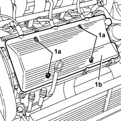

1016A42 left hand cylinder head ignition coil cover - r+r
- Path
- Procedures > 10 ENGINE > 1016 CYLINDER HEAD/S > 1016A cam covers > 1016A42 left hand cylinder head ignition coil cover - r+r
- Kind
- repair procedure (removal / refitting; the operation number is the code)
- Applies to
- engines: 2.5 V6, 3.2 V6; all production periods
- Interactive page
- https://sloeber94.github.io/elrnDB-a156/en/#/3237461
Applies to: engines: 2.5 V6, 3.2 V6; all production periods
 Removing
Removing
 Refitting
Refitting1. Undo the bolts (1a) and remove the left cylinder head ignition coils cover (1b).

Applies to: engines: 2.5 V6, 3.2 V6; all production periods
Refitting
RemovingFit the left cylinder head ignition coils cover and fix it using the bolts.
Topics that link to this page (25)
- 1008C14 engine link bracket - r r
- 1016A30 left cam cover - r + r and replace gasket
- 1016A36 left hand and right hand cam cover - r+r
- 1016A46 cylinder head ignition coil covers - r+r
- 1016D21 lh cylinder head - r r and replace gasket for versions with air conditioner
- 1016D25 rh cylinder head - r r and replace gasket for versions with air conditioner
- 1020D12 front crank shaft oil seal cover - r + r and replace seals
- 1020D18 front crank shaft cover oil seal - replace
- 1032B14 toothed timing belt - r + r for timing adjustment or replacement versions with air conditioner
- 1032B47 toothed drive pulley - r r for versions with air conditioner
- 1032B55 lh head toothed drive pulley - r r for versions with air conditioner
- 1032B59 rh head toothed drive pulley - r r for versions with air conditioner
- 1032C18 mobile timing system tensioner - r + r for 24 valve engines
- 1032C32 fixed timing system tensioner (one) r + r
- 1036E11 camshafts in left hand cylinder head - r r on vehicle for versions with air conditioner
- 1036E15 camshafts in rh cylinder head - r r on vehicle for versions with air conditioner
- 1036E19 camshafts in lh and rh cylinder head - r r on vehicle for versions with air conditioner
- 1036E54 front oil seals of l/h overhead camshaft - replace
- 1036E58 front oil seal of r/h overhead camshafts - replace
- 1056B90 system cable bundle - r + r
- 1084B23 oil pump control return - r r
- 1088C12 water pump - r+r for versions with air conditioner
- 5510C14 ignition coil/s - r+r
- 5510C16 left hand cylinder head ignition coil - r+r
- 5510D10 spark plugs - r+r